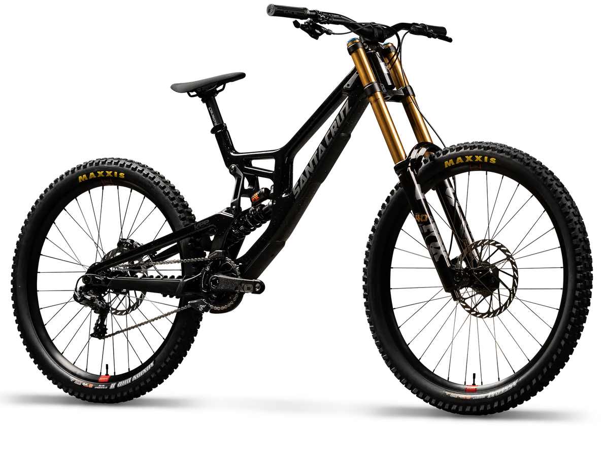

Down Hill

Le Downhill est une discipline de VTT extrême dédiée à la descente rapide sur des pistes techniques et souvent accidentées. Ce type de vélo est spécialement conçu pour absorber les chocs grâce à une suspension robuste et des freins puissants, offrant une maîtrise parfaite même dans les passages les plus engagés. Parfait pour les amateurs de sensations fortes et de vitesse